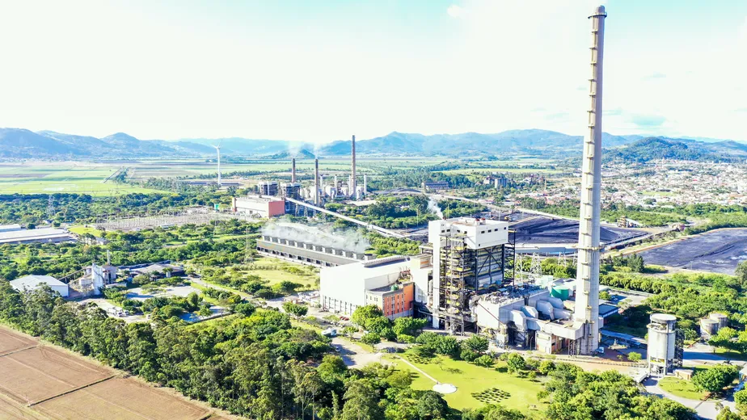

Energia Termoelétrica
O que é geração de energia termoelétrica?
É a eletricidade gerada a partir do calor de uma fonte, tais como a queima do carvão mineral, derivados do petróleo ou gás natural nas usinas térmicas.
O primeiro passo é a queima do combustível, gerando então o calor. Este calor gerado causa o aquecimento de uma caldeira com água líquida, que é então convertida em vapor.
Este vapor acionam turbinas, movimentando geradores que transformam esta energia cinética em energia elétrica.
Vantagens
- Instalações podem ser feitas próximas a regiões onde a energia será utilizada;
- A construção das usinas é mais rápida que a das hidroelétricas;
- É uma fonte de energia que atende regiões na qual não se tem outras opções.
Desvantagens
- Liberação de gases poluentes.
- Custo de geração de energia mais elevado por conta da utilização de combustíveis fósseis no processo.
- Utilização de recursos que não são infinitos e que possuem demanda.

Fonte: Globo
Fonte: Globo